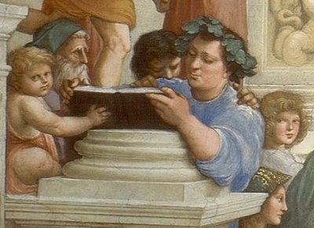

Epicúreos
Su Filosofía

La filosofía epicúrea
En la época helenística era habitual dividir el estudio filosófico en tres partes: lógica, física y ética. Epicuro siguió en principio este esquema, pero introduciendo un cambio importante, sustituyó la lógica por la canónica o teoría del conocimiento, cambio que consideraba más apropiado para sus fines, que ya hemos dicho que eran liberar al hombre de sus temores, y conseguir la serenidad y la felicidad, pero para ello era necesario el conocimiento científico de la realidad.
Por tanto el estudio filosófico se compone también en Epicuro de tres partes: canónica, física y ética. Para Epicuro había un solo mundo el material, que se podía llegar a conocer a través de los sentidos
Canónica
La canónica es la parte que enseña los fundamentos del proceso por el que llegamos a distinguir lo verdadero de lo falso, es decir, es una teoría del criterio de verdad. La teoría epicúrea se basa en la percepción sensorial, la sensación es el fundamento de todo proceso de conocimiento para conocer la realidad. Es, por tanto, una teoría sensualista.
La teoría epicúrea del conocimiento propone 4 criterios de verdad, de realidad o de evidencia:
- La sensación, es el contacto entre nuestro cuerpo y todo lo que le rodea, y no necesita más criterios porque todo lo que se percibe es verdad. Los sentidos recogen las imágenes o simulacros (eídola) que desprenden los cuerpos. Estos “eídola” están formados por átomo muy sutiles y se transmiten como efluvios que penetran en el órgano sensorial y producen la impresión.
- Los sentimientos o afecciones, que son las respuestas del sujeto a los datos sensibles y son reacciones de placer o de dolor ante las sensaciones.
- Anticipaciones o prolepsis, son imágenes mentales que se forman cuando las impresiones sensoriales de un mismo objeto se repiten de una manera clara y semejante y sirven para reconocer nuevas sensaciones.
- El cuarto criterio es el más complejo y resulta difícil precisarlo. Se suele traducir como proyecciones imaginativas del entendimiento o de la mente, representaciones estructuradas del pensamiento, etc. Básicamente se trata de las cosas que no podemos percibir mediante los sentidos, pero que sabemos que existen, por ejemplo los átomos o el vacío.
Física
Epicuro retomó para su física la concepción materialista de los físicos jonios y el atomismo de Demócrito y Leucipo, pero manteniendo un cuidadoso esfuerzo por eludir cualquier tipo de determinismo. No estaba dispuesto a ceder ni una pequeña parte de la libertad radical del ser humano, así que era la física la que tenía que encajar en su sistema y no al revés, ya que la pretensión era fundamentar su ética.
Epicuro escribió treinta y siete libros acerca de la naturaleza, de los cuales apenas queda una pequeña parte de forma secundaria. Para el estudio de la física contamos con la "Carta a Herodoto" conservada por Diógenes Laercio y el poema "De Rerum Natura" de Lucrecio. La carta a Herodoto es un resumen de su teoría física, pero a diferencia del resto de escritos conservados, este tiene un carácter de resumen avanzado para gente que ya conocía sus teorías y se manejaba con los conceptos que expone. Es un texto de difícil interpretación, que además pretende ser muy conciso.
El primer principio de esta física materialista es que nada nace de la nada, es decir, no se necesita recurrir a los dioses, ni a otras entidades no materiales, para dar una explicación satisfactoria de todo cuanto ocurre. Por lo mismo nada se puede destruir en el no-ser. El segundo principio es el atomista de que todo está compuesto por átomos y vacío, esta concepción viene ya de los antiguos atomistas Leucipo y Demócrito, que Epicuro retoma pero introduciendo importantes cambios que luego veremos.
El mundo está formado por infinidad de átomos y los cuerpos nacen de la combinación de estos átomos. Los átomos tienen tres propiedades que solo ellos poseen, el resto de las propiedades son secundarias y se aplican a los cuerpos compuestos de átomos. Estas tres propiedades son: tamaño, forma y peso.
El tamaño puede variar pero dentro de unos límites, no puede ser mayor de un tamaño determinado porque se verían y los átomo son invisibles. Los átomos tienen tres tipos de movimiento: el vertical producto del peso, el choque y la desviación. Este movimiento de desviación o parénklisis (más conocido por su nombre en latín de clinamen gracias a Lucrecio) es el concepto más original y problemático de Epicuro, y es un concepto que une la física con la ética, lo veremos con detenimiento en otro apartado.
Los cuerpos pueden ser de dos clases simples y compuestos. Los cuerpos simples son los átomos pero que constan de partes mínimas, llamadas minima, y nada puede ser concebido más allá de estos minima. Existe un número finito de tales partes en cada átomo y los dependiendo del número de partes variará el tamaño del átomo. También pueden variar los átomos en forma debido a la disposición de sus partes mínimas. Los átomos son indestructibles, inmutables e infinitos y se mueven continuamente a través del vacío.
Abandonan la superficie de los cuerpos en forma de efluvios y su lugar es ocupado por otros átomos. Esta teoría es importante para explicar la sensación y los eidola que ya se vio en el otro punto.
Ética
También para Epicuro la filosofía es una practica sobre el individuo, no es de extrañar entonces la importancia que concede a la ética. La teoría del conocimiento y la física, aún siendo importantes en si mismas, son en este caso importantes también para la ética.
El objetivo principal que busca la ética es el estado de felicidad del individuo, para ello trata de conseguir lo que produce placer y evitar lo que produce dolor. Epicuro nos propone el cuádruple principio o tetraphármakon: no hay que preocuparse de los dioses, ni de la muerte, el bien es fácil de conseguir y el mal fácil de evitar.
La base de la ética de Epicuro está en la "Carta a Meneceo" y en las "Máximas capitales" recogidas ambas en el libro X de Diógenes Laercio, y que comienzan la exposición con el cuádruple remedio. Complementado con una serie de sentencias de otra obra conocida como "Gnomologio Vaticano" que corresponde a un códice encontrado en el Vaticano en el año 1.888.
Epicuro comienza invitando a todo el mundo a filosofar, independientemente de su edad, ya que cualquier edad es buena para ser feliz, ha encontrado una fórmula para ser feliz, y quiere compartirla con todo el que lo desee.
Se trata de una ética hedonista basada en el placer, pero el hedonismo griego tenía ya varios predecesores, el más conocido es el de Aristipo de Cirene, fundador de la escuela cirenaica. Pero también filósofos como Platón y Aristóteles, que escribieron sobre el asunto en varias de sus obras.
Epicuro retoma esta idea de placer pero quiere dejar claras sus diferencias con ellos. Conviene recordar además que el concepto de hedoné (placer) tiene un significado diferente, más amplio que lo que se entiende hoy por placer. Una concepción original de Epicuro es que la hedoné se compone de dos tipos de placeres: los placeres en reposo o catastemáticos y los placeres en movimiento o cinéticos.
El placer catastemático es un estado físico que se caracteriza por la ausencia de dolor en el cuerpo o aponía, y por la ausencia de perturbaciones en el espíritu o ataraxía. El placer cinético es el placer de los sentidos en el proceso de eliminación del dolor. Epicuro considera superiores a los placeres catastemáticos o en reposo ya que es un estado necesario para alcanzar la felicidad, mientras que los placeres en movimientos son necesarios también pero para alcanzar el estado de placer catastemático.
Considera que los males del alma son más penosos que los del cuerpo, pero también los placeres del alma son superiores, en esto se diferencia de los cirenaicos, y que los dolores del cuerpo son más fáciles de eliminar que los del alma. Los males del alma están causados por la ignorancia y los temores que producen las falsas opiniones y las creencias erróneas, que perturban nuestro espíritu. En esto la sociedad y la educación tienen bastante culpa ya que fomentan dicho estado. Epicuro afirma que el bien consiste en buscar el placer y huir del dolor.
<- Atrás